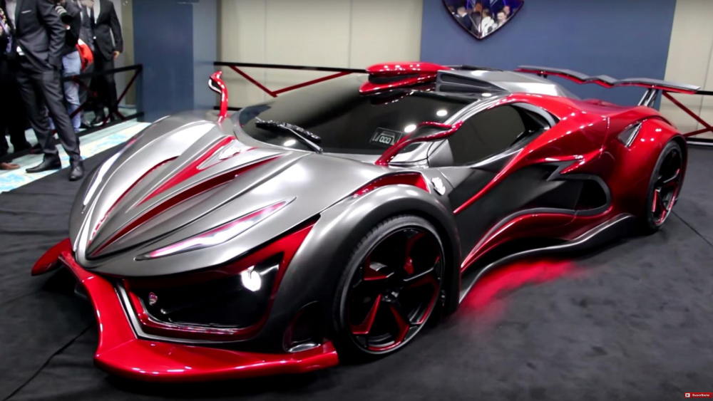
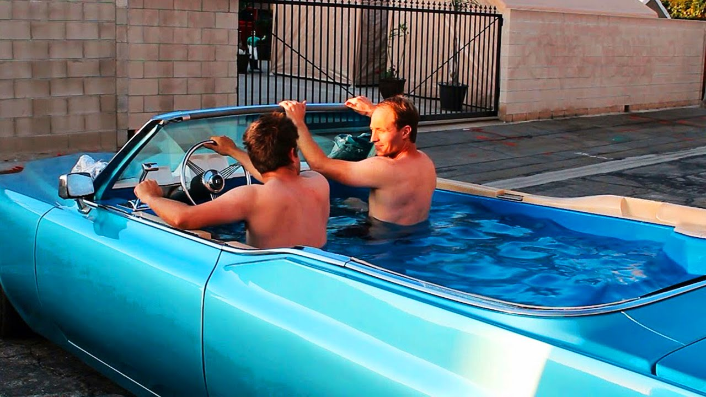
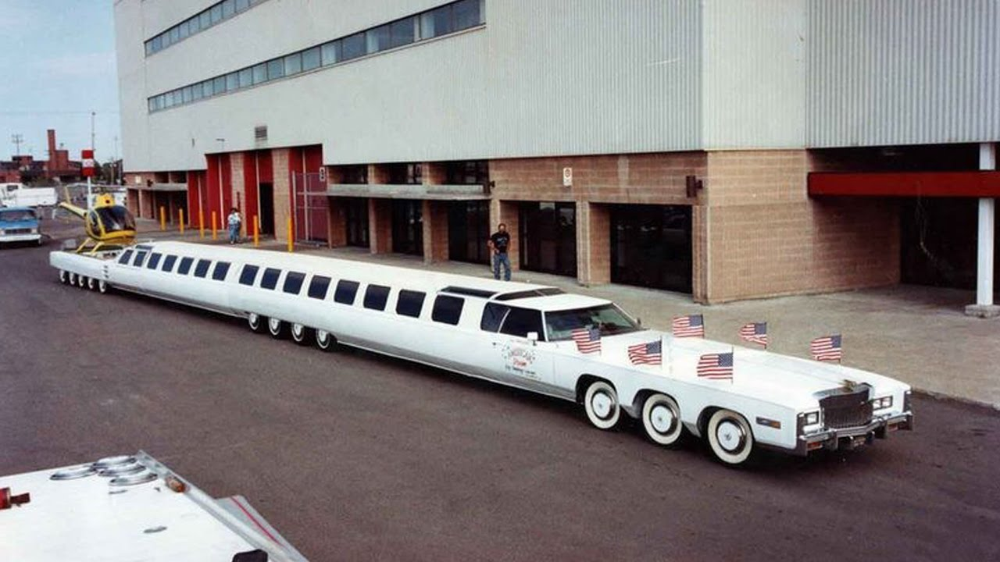

This car is called the Inferno Exotic Car, a new super sports car thats coming out in Mexico.
It has 670 torque, and 1,400 horsepower. An interesting fact is that due to its unique sensor
chip, it litterally pulls power from the air, meaning you never have to recharge it.
This car is the only car you will ever need.
This stylish vehicle is capable of going up to 90 mph,
looking fancy, and travelling through time.
Just make sure that you DO NOT disrupt the space-time continuum

Good ole Mater. He's freindly, loyal, and the best tow truck you'll ever meet.
A couple of his favorite passtimes iclude driving backwards and riding in helicopters.
Just make sure you have some patience left in you before talking to him,
Because if you don't, he will get on your nerves very quickly.

Puts a whole new meaning to the word doesn't it?
This car is the only car anyone needs on a nice hot day.
Perfect for swimming, cruising, and possible severe injury,
but that last one is only because there is no seat belts.

Honestly is there any other way to descibe this monster?
This limo is big, ridiculously big, like a subway train big.
How one could possibly drive this thing safely is beyond me,
but one thing is for certain, if you own one of these beasts,
then you got some serious cash in your pocket.